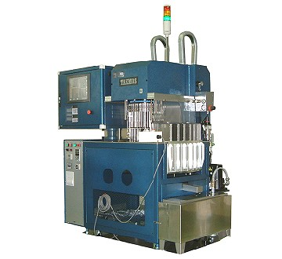

埼玉県寄居町・省力化機器メーカ
つくったのは、
道具のほうです。
タクモス精機は、部品をつくる下請けではなく、部品をつくるための機械と金型をつくるメーカです。1975年発売の板金用標準金型「クリーンパンチ」と、1987年から改良を重ねるサーミスタ選別装置「TDシリーズ」。二つのロングセラーを軸に、治具から自動機まで、製造現場の省力化を提案しています。
打ち抜き金型・ホルダ・手動プレスを中心に、特許7件・実用新案3件・意匠登録6件を保有しています。
- 1974設立
- 50年目のクリーンパンチ1975年 販売開始
- 0.1%TDシリーズの実績測定精度
- 16件特許・実用新案・意匠登録
二つの主力
半世紀売れている道具と、
40年選び続ける機械。
1975年 販売開始
クリーンパンチ
板金加工用 標準金型システム
板金加工用の打ち抜き金型をいち早く標準化し、優れた利便性と短納期・低コストを実現した製品です。幅広いラインナップにより、穴あけ以外にも絞り、切起こしなど、あらゆる板金加工に対応します。
板金加工機メーカおよび板金加工業各社にご利用いただいています。
1978年 初期型出荷
TDシリーズ
サーミスタ用 高精度温度特性選別装置
オイルバス式のサーミスタ温度特性選別装置として出荷を始め、高精度油中測定を特長とする「TDシリーズ」として確立しました。国内サーミスタメーカ各社に数十台の納入実績があります。
白金測温抵抗体など、他のセンサ用選別装置への応用実績もあります。
TDシリーズ 仕様
油の中で、測ります。

1987年に1号機を発売して以来、数々の改良を重ねた抜群の完成度を誇るロングセラー検査装置です。高精度な油中測定が最大の特徴で、スタンドアローン機としての優れた使い勝手も備えています。
- 対応サーミスタ形状
- ラジアル型（TD-R型）／アキシャル型（TD-A型）
- 使用媒体
- シリコンオイル 約16リットル
- 温度範囲
- 0 〜 200 ℃
- 測定精度
- 0.3 %以内（実績値は 0.1 %）※ 同一ワーク10回測定における［変化幅］÷［平均値］
- 処理能力
- 50 〜 90 個／分
- 装置寸法
- W1500 × D810〜1300 × H1930〜2230 以内※ オイル槽内のメンテナンスを容易にするヘッドアップ機構装備
受託設計・部品加工
自社製品で鍛えた設備で、
よその仕事も。
自社製品の製造販売に加え、専用金型・その他加工機、自動検査装置、治具等の設計製作も承っています。金型生産用の多彩な自社設備を生かし、材料から旋削・切削加工、熱処理、研削・放電仕上げを必要とするような多工程の部品加工も得意としています。
主要設備
金型屋の機械が、
ひと通り。
切削・研削・放電・板金・熱処理・検査。金型を自社で作り切るための設備です。
| 区分 | 設備 | 加工範囲 | メーカ | 台数 |
|---|---|---|---|---|
| 切削加工 | マシニングセンタ | 763×411 | 大阪機工 | 1 |
| マシニングセンタ | 700×1000 | 浦和製作所 | 1 | |
| マシニングセンタ | 510×320 | 三菱重工業 | 1 | |
| NCフライス | 720×300 | 大阪機工 | 1 | |
| NC旋盤 | φ150×100 | 森精機製作所 | 2 | |
| NC旋盤 | φ250×200 | 森精機製作所 | 2 | |
| 竪フライス盤 | 650×300 | 豊和産業 | 1 | |
| 横フライス盤 | 650×300 | 大隈豊和 | 1 | |
| 治具フライス盤 | 650×300 | ブリッジポート | 1 | |
| 研削加工 | 精密CNC成型研削盤 | 500×200 | アマダマシンツール | 1 |
| CNC円筒研削盤 | φ150×350 | 三菱重工業 | 1 | |
| CNCパンチグラインダ | 70×300 | 大隈豊和 | 1 | |
| センタレスグラインダ | φ1×φ40（φ100） | 大宮製作所 | 1 | |
| 平面研削盤 | 600×400 | アマダマシンツール | 1 | |
| 平面研削盤 | 500×200 | 日興機械 他 | 2 | |
| 円筒研削盤 | φ200×600 | シギヤ精機 | 1 | |
| パンチマイクログラインダ | — | 鈴木 | 4 | |
| 放電加工 | ワイヤ放電加工機 | 250×300 | 三菱電機 | 2 |
| ワイヤ放電加工機 | 350×250 | ソディック | 1 | |
| NC放電加工機 | 300×200 | ソディック | 2 | |
| 放電小穴加工機 | — | ソディック | 1 | |
| 板金加工 | シャーリング | 4.5×1200 | 相沢鉄工 | 1 |
| プレスブレーキ | 30t | アマダ | 1 | |
| プレスブレーキ | 20t | 富士機工 | 1 | |
| プレスブレーキ（ベンダ） | 40t | 東洋工機 | 1 | |
| エアブラスト | — | 不二製作所 | 2 | |
| 熱処理 | 無酸化自動熱処理炉 | — | サーマル | — |
| 小型電気炉 | — | 畑電機 | — | |
| 検査 | 三次元測定装置 | — | ミツトヨ | — |
| 工具顕微鏡 | — | ミツトヨ | — | |
| ロックウェル硬度計 | — | ミサワ | — | |
| 偏心検査機 | — | 大菱 | — |
よくあるご質問
はじめての方へ
クリーンパンチとは何ですか。
1975年に販売を開始した板金加工用の標準金型システムです。打ち抜き金型をいち早く標準化し、優れた利便性と短納期・低コストを実現しました。幅広いラインナップにより、穴あけ以外にも絞り、切起こしなど、あらゆる板金加工に対応します。
TDシリーズの精度はどのくらいですか。
測定精度は0.3%以内、実績値では0.1%です（同一ワーク10回測定における変化幅÷平均値）。温度範囲は0〜200℃、処理能力は50〜90個/分です。高精度な油中測定が最大の特徴です。
サーミスタ以外のセンサにも対応できますか。
TDシリーズで蓄積した技術と経験を生かし、白金測温抵抗体など他のセンサ用温度特性選別装置への応用実績があります。お問い合わせください。
自社製品以外の仕事も受けていますか。
専用金型・その他加工機、自動検査装置、治具等の設計製作を承っています。また金型生産用の多彩な自社設備を生かし、旋削・切削加工から熱処理、研削・放電仕上げまでを必要とする多工程の部品加工も得意としています。
会社概要
株式会社タクモス精機
- 会社名
- 株式会社タクモス精機（TAKMOS SEIKI）
- 代表者
- 代表取締役 川上 幹太
- 設立
- 1974年
- 資本金
- 1,500万円
- 従業員数
- 15名
- 所在地
- 〒369-1211 埼玉県大里郡寄居町赤浜1174-3
Tel. 048-582-2271 ／ Fax. 048-582-2105 - 事業内容
- 精密機械の設計製造販売／電気機器の設計製造販売／省力機器の設計製造販売／板金用打抜きプレス金型の製造販売／上記に付帯する一切の事業
- 主な取引先
- 板金加工機メーカおよび板金加工業各社／サーミスタメーカ各社 ほか
- 知的財産
- 製品特許 7件／実用新案 3件／意匠登録 6件
（主に打ち抜き金型、ホルダ、手動プレスに関する）
省力化したい工程を、教えてください。
クリーンパンチ・TDシリーズのご相談も、専用金型や治具の設計製作も、こちらへどうぞ。